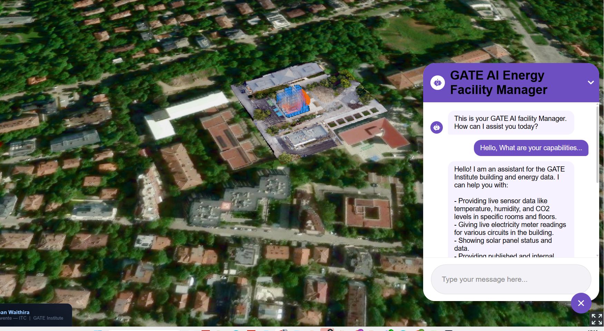

This is the participation service for residents of Aadorp, Twente. It is run by iLabs Technologies B.V. on behalf of a research programme funded by the European Union. Choose your preferred language below.
Participation mode
No personal data is collected while you are simply viewing the Aadorp digital twin. If you choose to take part in a co-design session, we will ask for your agreement first.
This service
Operated by iLabs Technologies B.V. on behalf of the 3DxVERSE programme (EU DIGITAL Europe No. 101168258). This service follows the 3DxVERSE Trust Framework. .
Your choice
You do not have to take part. If you choose not to, you can still view the local digital twin. There is no penalty for declining. If you choose to take part, you will be asked to agree to how your data is used before anything is collected.
Please read all seven points. ↓ Scroll down to read all
This is your participation reference code. It does not contain your name or any personal details. Keep it safe as you will need it to view your receipt or to withdraw your agreement.
Scan this QR code at any time to view your agreement or withdraw consent.
https://ctregistry.3dxverse.eu/retrieve/AAD-001-XXXX-XXXX
The 3DxVERSE programme wants to process data about your home's energy use and your preferences about energy options in Aadorp.
We will use this data to:
- Inform local planning decisions about energy and heating in Aadorp (Municipality of Almelo).
- Propose retrofit and energy transition options for homes in the Aadorp area.
- Research how digital twins can be made useful for citizens (University of Twente / Saxion).
- Plan a Positive Energy District for Aadorp (IS2H4C / Duurzaam Aadorp).
- Record and transcribe your contributions at workshops to improve our understanding of what residents want.
◇ Processor list shown once — not per purpose (per CD-12 separation principle).
I have read or had explained to me the information above and I understand: why my data is processed; what data may be collected; and that I can withdraw at any time.
Your Combined Receipt
Agreement recorded. Save or print this page. You will need it to retrieve your receipt or withdraw your agreement later.
Scan this code at any time to view your receipt or withdraw your agreement. Keep this page safe.
◇ AC-05: Legal basis placeholder visible for unresolved purposes.
P-02 Propose retrofit and energy transition options for homes in the Aadorp area.
P-03 Research how digital twins can be made useful for citizens (University of Twente / Saxion).
P-04 Plan a Positive Energy District for Aadorp (Duurzaam Aadorp).
[Phase 2 placeholder] A machine-readable Verifiable Credential (SD-JWT / W3C VC) will be issued in Phase 2.
◇ AC-06: Both sections present and labelled. AC-07: Print/download produces readable output.
Need to withdraw?
You can withdraw your agreement at any time. This has no adverse consequences.
Enter your participation reference code to withdraw your agreement. We will stop processing your data within 3 working days.
Questions? Contact privacy@3dxverse.eu
You can still view the Aadorp Local Digital Twin at any time.
Other ways to withdraw: scan your QR code · email privacy@3dxverse.eu · tell a programme worker
Consent Withdrawn
Your withdrawal has been recorded. We will stop processing your data within 3 working days. You can still view the Aadorp digital twin.
Questions? Contact privacy@3dxverse.eu
You can still view the Aadorp Local Digital Twin at any time.
What is a digital twin?
A digital twin is a virtual model of a real place. It combines map, building, and energy data so residents and planners can explore options, compare scenarios, and understand possible impacts before decisions are made.
This interactive dashboard shows building energy efficiency data for Aadorp, the Netherlands. Explore how existing buildings can be improved through retrofitting to reduce energy usage and CO2 emissions.
Each building has an energy label ranging from A+++ (very efficient) to G (least efficient). You can:
- 🏠 Click a building to view its energy label, usage, and upgrade options.
- 🎯 Select a target label to calculate retrofit costs and estimated benefits.
- 🔘 Use the switch to select and analyze all buildings with a specific label.
- 📈 View savings, payback periods, and CO2 reductions in the chart.
This tool supports sustainable urban planning by visualizing data from 3D city models.
Your Digital Twin Preferences
Now that you have agreed to participate, we have a few short questions about how you would like to use the Aadorp digital twin. Your answers help us design the tool for people like you. All responses are processed anonymously under the purposes you agreed to (P-03).
.png)
Use this example visual to compare upgrade options (for example solar, insulation, or heat pump) before choosing. Explore the full neighbourhood-scale digital twin here: a-neighbourhood-scale-urban-digital-twin-for-energy-ecolog.pages.dev.

This example shows how an assistant can compare scenarios and explain possible savings in plain language.
Thank you!
Your answers have been anonymously recorded and will help us design the Aadorp digital twin for all residents.
| ID | Name | Description | Special category |
|---|---|---|---|
| DC-01 | Home energy consumption data | Data about how much energy your home uses and what type. | No |
| DC-02 | Energy preferences | Your preferences about energy transition options. | No |
| DC-03 | Workshop contributions | Notes, recordings and transcriptions from workshops. | No |
| DC-04 | Demographic proxy data | Approximate age group and household type — no exact age or income. | No |
| ID | Purpose statement | Data categories | Legal basis |
|---|---|---|---|
| P-01 | Inform local planning decisions about energy and heating in Aadorp. | DC-01, DC-02 | Pending DPO |
| P-02 | Propose retrofit and energy transition options for homes in Aadorp. | DC-01, DC-02 | Pending DPO |
| P-03 | Research how digital twins can be made useful for citizens. | DC-02, DC-03, DC-04 | Art. 6(1)(f) — legitimate interests |
| P-04 | Plan a Positive Energy District for Aadorp. | DC-01, DC-02 | Pending DPO |
| P-05 | Record and transcribe workshop contributions. | DC-03 | Art. 6(1)(a) / Art. 6(1)(f) (processor-dependent — see §3.3) |
| Processor | Role | Legal basis | Art. 28 DPA | Location |
|---|---|---|---|---|
| iLabs Technologies B.V. | Joint Controller | Pending DPO | N/A — controller | EEA |
| ERTICO | Joint Controller | Pending DPO | N/A — controller | EEA |
| University of Twente / Saxion | Data Processor | Art. 6(1)(f) | Pending | EEA |
| Transcription service | Sub-processor | Art. 6(1)(a) consent | ⛔ BLOCKING | TBC |
| Cesium Inc. | Sub-processor | TBC — SCC pending | ⛔ BLOCKING | Non-EEA |
Download current config as JSON. Re-upload to restore. Phase 1 SDK mechanism for Hamburg, Timişoara, Aruba deployments.
Having trouble? Email data-protection-officer@3dxverse.eu